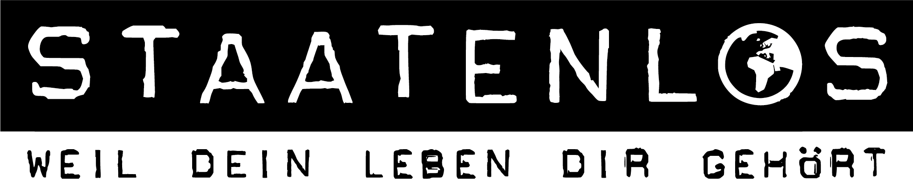

Südamerika ist digital viel unterschiedlicher, als es auf den ersten Blick wirkt
Uruguay und Chile gehören zu den stärkeren Freiheits- und Datenschutzräumen. Brasilien besitzt eine moderne LGPD, blockierte aber zugleich zeitweise Plattformen. Paraguay hat ein neues Datenschutzgesetz verabschiedet – das Stand August 2026 noch gar nicht gilt. Und Venezuela kombiniert Überwachung, Repression und technische Netzblockaden.
Genau deshalb bewerten wir nicht nur, ob ein Land ein Datenschutzgesetz besitzt. Entscheidend ist, ob es eine unabhängige Aufsicht gibt, wie Sicherheitsbehörden kontrolliert werden, welche technischen Eingriffe möglich sind und was tatsächlich dokumentiert wurde.
Datenschutzrecht entwickelt sich schnell
Chile, Paraguay und Peru zeigen aktuell besonders gut, wie schnell sich Datenschutzregeln verändern. Deshalb nennen wir immer den Datenstand und unterscheiden zwischen bereits geltendem Recht und beschlossenen Reformen, die erst später wirksam werden.
Digitale Freiheit ist mehr als Zensur
Brasilien und Kolumbien zeigen, dass ein Internet relativ offen sein kann, während Journalisten trotzdem Gewalt, Einschüchterung oder Überwachungsrisiken erleben. Nutzerrechte hängen deshalb auch von Gerichten, Polizei, Sicherheitsbehörden und gesellschaftlicher Gewalt ab.
So analysieren wir jedes Land
Bei jedem Land folgen zuerst die vier Kurzfakten Datenschutz · Aufsicht · Kontrolle · Auffälligkeit. Danach prüfen wir unsere vier Analyse-Ebenen.
Rechtlich erlaubt
Welche Eingriffe erlauben Gesetze? Welche Datenschutzrechte, Richtervorbehalte und Kontrollstellen bestehen?
Technisch möglich
Welche Systeme existieren – zum Beispiel Plattform-Sperren, Kommunikationszugriffe, Gesichtserkennung oder andere Überwachungstechnik?
Dokumentiert praktiziert
Was ist durch Behörden, Gerichte, technische Analysen oder belastbare Recherchen tatsächlich belegt?
Berichtet / vermutet
Wo gibt es glaubhafte Vorwürfe oder Risiken, deren technische Attribution oder Beleglage schwächer ist?
Die 10 Länder im Schnellvergleich
Fünf vergleichsweise stärkere und fünf kritischere Beispiele. Die Ampel bewertet speziell digitale Privatsphäre, Überwachung und Freiheitskontrolle – nicht Lebensqualität oder allgemeine Attraktivität eines Landes.
| Land | Bewertung | Wichtigster Prüfpunkt | Kurzbegründung |
|---|---|---|---|
| Uruguay | Hoher Schutz | Weniger öffentliche Detaildaten zu konkreten Überwachungspraktiken als in Brasilien oder Argentinien. | Ein starker Datenschutzrahmen, spezialisierte Aufsicht und stabile rechtsstaatliche Institutionen sprechen klar für Uruguay. Die begrenztere Transparenz zur operativen Überwachung verhindert allerdings jede Aussage von „keiner Überwachung“. |
| Chile | Hoher Schutz | Antiterrorgesetz 2025 und Debatten über IMSI-Catcher zeigen wachsende Sicherheitsbefugnisse. | Chile ist digital sehr offen und institutionell stark. Die bevorstehende Datenschutzreform ist positiv, wird aber erst ab Dezember 2026 vollständig wirksam; Sicherheitsbefugnisse bleiben ein Prüffeld. |
| Argentinien | Relativ guter Schutz | Seit 2024 existiert eine KI-Sicherheitseinheit mit Gesichtserkennung, Social-Media-Monitoring und Predictive-Policing-Funktionen. | Gute Datenschutz- und Freiheitsstrukturen treffen auf wachsende technische Sicherheitsbefugnisse und ein härteres Klima gegenüber kritischen Stimmen. |
| Brasilien | Relativ guter Schutz | 2024/25 Plattform-Sperren; Ermittlungen zur mutmaßlich illegalen Überwachung durch Teile des Nachrichtendienstes ABIN. | LGPD und ANPD sind starke Schutzpfeiler. Plattform-Sperren, Gewalt gegen Online-Akteure und dokumentierte Missbrauchsvorwürfe bei Sicherheitsstrukturen verhindern Grün. |
| Kolumbien | Relativ guter Schutz | Digitale Journalisten und Aktivisten bleiben erheblichen Gewalt- und Sicherheitsrisiken ausgesetzt. | Datenschutzaufsicht und Verfassungsgericht sind echte Stärken. Gewalt, Sicherheitskonflikte und begrenzte Schutzwirkung außerhalb großer Städte verhindern eine grüne Bewertung. |
| Ecuador | Weitreichende Probleme | Journalisten werden bedroht; staatliche und nichtstaatliche Akteure setzen Online-Akteure unter Druck. | Ein moderner Datenschutzrahmen steht einer realen Sicherheits- und Rechtsstaatskrise gegenüber. Für digitale Journalisten und kritische Nutzer ist das Risiko deutlich erhöht. |
| Peru | Weitreichende Probleme | Zunehmende Angriffe und Einschüchterung gegenüber Journalisten; Sicherheitsnotstände mit erweiterten Befugnissen. | Der Datenschutzrahmen wird besser, aber institutionelle Instabilität und dokumentierter Druck auf Journalisten und Protestierende schwächen die reale Schutzwirkung deutlich. |
| Paraguay | Weitreichende Probleme | Großer Unterschied zwischen beschlossenem Zukunftsrecht und tatsächlich geltendem Datenschutzstand August 2026. | Die beschlossene Reform ist ein großer Fortschritt, schützt Nutzer Stand August 2026 aber noch nicht vollständig. Schwächere Institutionen und geringe Transparenz zur Überwachungspraxis halten Paraguay deutlich unter Gelb. |
| Bolivien | Weitreichende Probleme | Politische Freiheit verbessert sich schneller als institutioneller Datenschutz und Privacy-Governance. | Politisch hat sich Bolivien verbessert, doch Privacy-Governance, Datenschutzaufsicht und Justizkontrolle bleiben deutlich hinter den stärkeren südamerikanischen Staaten zurück. |
| Venezuela | Sehr problematisch | Über 200 Domains 2024/25 blockiert; X, Signal, YouTube, TikTok und Telegram waren zeitweise oder dauerhaft betroffen. | Politische Repression, technische Netzblockaden, Überwachung und schwache institutionelle Kontrolle machen Venezuela zum deutlich kritischsten Land unseres Südamerika-Vergleichs. |
5 vergleichsweise stärkere Beispiele
Auch die stärkere Hälfte ist nicht „überwachungsfrei“. Argentinien und Brasilien zeigen besonders deutlich, wie moderne Datenschutzsysteme neben wachsenden technischen Sicherheitsbefugnissen bestehen können.
Uruguay
Uruguay gehört in Südamerika zu den stärksten Beispielen für institutionellen Datenschutz und demokratische Kontrolle. Das Land besitzt seit Jahren ein umfassendes Datenschutzgesetz, eine spezialisierte Aufsicht und eine sehr stabile freiheitliche Grundordnung. Die konkrete öffentliche Datenlage zu operativer staatlicher Überwachung ist allerdings deutlich dünner als bei den großen Nachbarstaaten.
Rechtlich erlaubt
Law 18.331 bildet den allgemeinen Datenschutzrahmen für öffentliche und private Datenverarbeitung. Ermittlungs- und Sicherheitszugriffe bleiben möglich, sind aber in einen grundsätzlich rechtsstaatlichen Rahmen eingebettet.
Technisch möglich
Uruguay verfügt wie andere moderne Staaten über technische Ermittlungs- und Telekommunikationsfähigkeiten. Öffentlich dokumentierte Hinweise auf flächendeckende Netzfilter oder eine systematische nationale Massenüberwachungsarchitektur sind in den von uns geprüften Quellen jedoch begrenzt.
Dokumentiert praktiziert
Freedom House beschreibt Uruguay weiterhin als eine der stabilsten Demokratien Lateinamerikas mit starkem Schutz politischer Rechte und Bürgerrechte. Die Datenschutzaufsicht arbeitet institutionell und beaufsichtigt Datenverarbeitung.
Berichtet / vermutet
Die relativ geringe Zahl öffentlich dokumentierter Überwachungsfälle ist kein Beweis dafür, dass keine Überwachung stattfindet. Für unsere Einordnung ist deshalb auch die Transparenz der Sicherheitsbehörden ein Beobachtungspunkt.
Chile
Chile besitzt eines der offensten Internetumfelder der Region. Der neue Datenschutzrahmen mit einer eigenständigen Datenschutzagentur ist bereits beschlossen, tritt aber erst am 1. Dezember 2026 vollständig in Kraft. Gleichzeitig zeigen neue Antiterrorregeln und Debatten über Überwachungstechnik, dass auch Chile nicht frei von Sicherheitsrisiken ist.
Rechtlich erlaubt
Bis zum Inkrafttreten der neuen Reform bleibt der bisherige Datenschutzrahmen maßgeblich. Ley 21.719 stärkt Rechte, Sanktionen und Aufsicht erheblich, gilt Stand August 2026 aber noch nicht vollständig. Sicherheitsrecht erlaubt zugleich zielgerichtete Ermittlungsmaßnahmen.
Technisch möglich
Chile verfügt über moderne Ermittlungs- und Telekommunikationsstrukturen. Menschenrechtsorganisationen diskutieren den möglichen Einsatz von IMSI-Catchern und anderen Überwachungstechnologien; ihre konkrete Nutzung muss jeweils fallbezogen belegt werden.
Dokumentiert praktiziert
Freedom on the Net 2025 beschreibt Chile als eines der offensten Online-Umfelder weltweit. Politische, soziale und religiöse Inhalte werden nicht systematisch zensiert. Journalisten können jedoch durch Klagen, Belästigung oder Überwachungsrisiken unter Druck geraten.
Berichtet / vermutet
Die neue Datenschutzagentur und viele modernisierte Rechte sind Stand August 2026 noch Zukunftsrecht. Deshalb rechnen wir Verbesserungen nicht so, als wären sie bereits vollständig umgesetzt.
Argentinien
Argentinien verfügt über ein lang etabliertes Datenschutzgesetz, eine zentrale Datenschutzaufsicht und ein weiterhin relativ offenes Internet. Gleichzeitig haben sich seit 2024 staatliche Sicherheitsinstrumente verändert: Eine neue KI-Einheit darf unter anderem Gesichtserkennung, Social-Media-Monitoring und sogenannte Predictive-Policing-Techniken einsetzen.
Rechtlich erlaubt
Law 25.326 bleibt der zentrale Datenschutzrahmen. Sicherheitsbehörden dürfen unter gesetzlichen Voraussetzungen Ermittlungs- und Überwachungsinstrumente einsetzen. Die 2024 eingerichtete Unidad de Inteligencia Artificial Aplicada a la Seguridad erweitert den ausdrücklich vorgesehenen Technikeinsatz.
Technisch möglich
Die Sicherheits-KI-Einheit kann Gesichtserkennung, Social-Media-Auswertung und weitere datengetriebene Ermittlungswerkzeuge nutzen. Dadurch wachsen technische Möglichkeiten deutlich über klassische Telekommunikationsüberwachung hinaus.
Dokumentiert praktiziert
Freedom on the Net 2025 beschreibt das Internet weiterhin als relativ robust und offen. Gleichzeitig nahmen Belästigung und Einschüchterung von Journalisten und kritischen Nutzern zu, teilweise verstärkt durch Regierungsvertreter in sozialen Medien.
Berichtet / vermutet
Menschenrechtsorganisationen warnen davor, dass KI-gestützte Sicherheitsinstrumente zur Überwachung politischer Gegner oder Journalisten eingesetzt werden könnten. Diese Risiken sind ernst, aber nicht jede befürchtete Nutzung ist bereits als konkrete Praxis belegt.
Brasilien
Brasilien besitzt mit der LGPD und der ANPD einen der stärksten formellen Datenschutzrahmen Südamerikas. Gleichzeitig ist das Land ein besonders gutes Beispiel dafür, dass Datenschutzrecht, Plattformregulierung und staatliche Überwachung miteinander kollidieren können: X und Rumble wurden zeitweise blockiert, und Ermittlungen gegen eine illegale Überwachungsstruktur innerhalb des Nachrichtendienstes ABIN laufen weiter.
Rechtlich erlaubt
Die LGPD schafft umfassende Datenschutzrechte und Pflichten. Sicherheits- und Strafrecht erlauben gerichtliche Zugriffe. Gleichzeitig können Gerichte Plattformen zu Sperren oder anderen Maßnahmen verpflichten.
Technisch möglich
Brasilien besitzt hochentwickelte Telekommunikations-, Identitäts- und Sicherheitsinfrastruktur. Geheimdienst- und Polizeibehörden verfügen über technische Überwachungsmöglichkeiten; die rechtsstaatliche Kontrolle dieser Instrumente ist entscheidend.
Dokumentiert praktiziert
2024 wurde X zeitweise landesweit blockiert; 2025 folgte eine Sperre von Rumble. Im Mai 2025 wurden mehrere Personen im Zusammenhang mit mutmaßlichen strategischen Desinformations- und Überwachungsaktivitäten innerhalb der ABIN angeklagt.
Berichtet / vermutet
Brasilien führt eine intensive Debatte über Plattformhaftung, Desinformation und die Grenzen richterlicher Online-Eingriffe. Nicht jede Content-Maßnahme ist Zensur; zugleich können überbreite Entscheidungen erhebliche Auswirkungen auf digitale Freiheit haben.
Kolumbien
Kolumbien verfügt über ein etabliertes Datenschutzgesetz und eine aktive Aufsicht durch die SIC. Gleichzeitig bleibt der Online-Raum durch Gewalt gegen Journalisten, Hackerangriffe und Sicherheitsrisiken belastet. Positiv ist, dass das Verfassungsgericht wiederholt Entscheidungen zugunsten von Online-Meinungsfreiheit und Zugang zu Informationen getroffen hat.
Rechtlich erlaubt
Law 1581/2012 schützt personenbezogene Daten. Sicherheits- und Nachrichtendienstgesetze erlauben Ermittlungs- und Überwachungsmaßnahmen unter gesetzlichen Voraussetzungen.
Technisch möglich
Kolumbien verfügt über moderne Sicherheits- und Telekommunikationsinstrumente. Die langjährige innere Sicherheitslage erhöht die praktische Bedeutung von Metadaten-, Kommunikations- und Gerätezugriffen.
Dokumentiert praktiziert
Freedom on the Net 2025 verzeichnete einen leichten Rückgang der Internetfreiheit. Gewalt gegen digitale Journalisten bleibt ein zentrales Problem. Gleichzeitig urteilte das Verfassungsgericht mehrfach zugunsten von Online-Meinungsfreiheit und Informationszugang.
Berichtet / vermutet
Nicht jede Bedrohung geht vom Staat aus: organisierte Kriminalität und bewaffnete Gruppen spielen eine große Rolle. Für Nutzer ist das Ergebnis dennoch relevant, weil digitale Meinungsfreiheit auch durch nichtstaatliche Gewalt eingeschränkt wird.

5 deutlich kritischere Beispiele
Hier werden schwächere Institutionen, Gewalt gegen Journalisten, Datenschutzlücken, fehlende Aufsicht oder direkte technische Netzblockaden stärker sichtbar.
Ecuador
Ecuador besitzt seit 2021 ein modernes Datenschutzgesetz und seit 2024 eine aktive Superintendencia de Protección de Datos Personales. Gleichzeitig leidet die digitale Freiheit unter Gewalt, schwächerer Rechtsstaatlichkeit, Druck auf Journalisten und einem hohen staatlichen wie nichtstaatlichen Überwachungs- und Sicherheitsrisiko.
Rechtlich erlaubt
Die LOPDP schafft moderne Datenschutzrechte und eine spezialisierte Aufsicht. Gleichzeitig erlauben Sicherheits- und Strafgesetze staatliche Eingriffe, deren Bedeutung durch den anhaltenden Sicherheitsnotstand stark gestiegen ist.
Technisch möglich
Ecuador verfügt über moderne Telekommunikations- und Sicherheitsinstrumente. Freedom House sieht keine systematische technische Netzabschottung, dokumentiert aber relevante Risiken für Privatsphäre und journalistische Kommunikation.
Dokumentiert praktiziert
2024/25 wurden Journalisten wegen politisch sensibler Recherchen bedroht, verklagt oder ins Exil gedrängt. Politische Inhalte wurden teils über Urheberrechtsbeschwerden entfernt. Massive Stromausfälle beeinträchtigten zusätzlich die Internetverfügbarkeit.
Berichtet / vermutet
Viele Bedrohungen gehen von organisierter Kriminalität oder anderen nichtstaatlichen Akteuren aus. Für die persönliche digitale Freiheit ist die Unterscheidung wichtig, ändert aber nichts daran, dass die reale Schutzlage deutlich schwächer ist.
Peru
Peru hat seinen Datenschutzrahmen 2025 mit einem neuen Reglamento zur Ley 29733 deutlich modernisiert. Die Datenschutzaufsicht ist aktiv. Gleichzeitig verschlechtern politische Instabilität, schwächere Justizkontrolle und wiederholte Angriffe auf Journalisten und Protestierende das Gesamtbild.
Rechtlich erlaubt
Die Ley 29733 schützt personenbezogene Daten. Das neue Reglamento von 2024/25 modernisiert die Umsetzung. Gleichzeitig kann die Regierung in Sicherheitsnotständen besondere Befugnisse aktivieren, die Grundrechte praktisch einschränken.
Technisch möglich
Polizei und Sicherheitsbehörden verfügen über Kommunikations- und Gerätezugriffsmöglichkeiten im Rahmen von Ermittlungen. Die Transparenz über konkrete technische Überwachungswerkzeuge ist begrenzt.
Dokumentiert praktiziert
Freedom House dokumentiert erhebliche politische Instabilität, Schwächen der Justiz und einen starken Anstieg von Angriffen auf Pressefreiheit. 2024 wurden hunderte Angriffe gegen Journalisten registriert.
Berichtet / vermutet
Für private Diskussionen beschreibt Freedom House weiterhin relativ viel Freiheit. Das Problem liegt stärker in institutioneller Schwäche, Protestrepression und dem Druck auf investigativen Journalismus als in flächendeckender technischer Netzüberwachung.
Paraguay
Paraguay hat Ende 2025 erstmals ein umfassendes allgemeines Datenschutzgesetz verabschiedet. Der entscheidende Haken: Law 7.593/2025 tritt erst im November 2027 vollständig in Kraft. Stand August 2026 befindet sich das Land daher in einem Übergang, während der demokratische und rechtsstaatliche Schutz weiterhin nur teilweise stark ist.
Rechtlich erlaubt
Law 7.593/2025 schafft erstmals einen umfassenden Datenschutzrahmen, ist aber Stand August 2026 noch nicht in Kraft. Bis dahin bleibt der Schutz stärker fragmentiert und sektoral.
Technisch möglich
Sicherheits- und Telekommunikationsbehörden verfügen über übliche Ermittlungsinstrumente. Es existieren deutlich weniger unabhängige öffentliche Daten zur tatsächlichen technischen Überwachungspraxis als in Brasilien oder Venezuela.
Dokumentiert praktiziert
Freedom House bewertet Paraguay weiterhin als nur teilweise frei und nennt institutionelle Schwächen und Korruption als relevante Probleme. Eine flächendeckende technische Internetzensur ist dagegen nicht als zentrales Merkmal dokumentiert.
Berichtet / vermutet
Der wichtigste methodische Punkt ist das Datum: Das neue Datenschutzgesetz darf nicht so dargestellt werden, als schütze es heute bereits vollständig. Erst seine Umsetzung ab 2027 wird zeigen, wie stark die praktische Aufsicht tatsächlich wird.
Bolivien
Bolivien hat 2025/26 politisch einen wichtigen demokratischen Fortschritt gemacht und wird 2026 wieder als frei eingestuft. Für Datenschutz und digitale Privatsphäre bleibt das Bild jedoch deutlich schwächer: Es fehlt weiterhin ein umfassender moderner allgemeiner Datenschutzrahmen mit starker unabhängiger Aufsicht.
Rechtlich erlaubt
Privatsphäre und personenbezogene Daten werden durch Verfassung, sektorspezifische Regeln und einzelne Gesetze geschützt. Ein umfassendes allgemeines Datenschutzgesetz mit einheitlichen Betroffenenrechten und starker unabhängiger Aufsicht fehlt jedoch.
Technisch möglich
Sicherheits- und Telekommunikationsbehörden besitzen Ermittlungs- und Kommunikationszugriffsmöglichkeiten. Öffentlich zugängliche Informationen über konkrete technische Überwachungssysteme und ihre Kontrolle sind begrenzt.
Dokumentiert praktiziert
Freedom in the World 2026 verzeichnet einen deutlichen demokratischen Fortschritt und eine friedliche Machtübergabe. Gleichzeitig bewertet Freedom House Unabhängigkeit der Justiz und Due Process weiterhin sehr schwach.
Berichtet / vermutet
Die zentrale Unsicherheit liegt weniger in dokumentierter Massenüberwachung als in fehlenden Datenschutzinstitutionen und schwacher Justizkontrolle. Das erhöht das Risiko, wenn Behördenzugriffe angefochten werden sollen.
Venezuela
Venezuela ist das klar kritischste Beispiel dieser Region. Staatliche Überwachung, massenhafte Domain-Sperren, blockierte Messenger und Social-Media-Plattformen sowie harte Repression gegen Regierungskritiker greifen direkt ineinander. Formelle Datenschutz- oder Privatsphäreregeln ändern an dieser praktischen Lage wenig.
Rechtlich erlaubt
Verfassung und IT-Recht erkennen Privatsphäre formal an. Gleichzeitig ermöglichen Sicherheits-, Telekommunikations- und Strafregeln weitreichende staatliche Kontrolle in einem Umfeld ohne wirksame unabhängige institutionelle Gegengewichte.
Technisch möglich
Der Staat kann Domains blockieren, Plattformen und Kommunikationsdienste einschränken und umfangreiche Überwachungs- und Identifikationsstrukturen nutzen.
Dokumentiert praktiziert
Freedom on the Net 2025 dokumentiert einen massiven Rückgang der Internetfreiheit. Mehr als 200 Domains wurden zwischen Juli 2024 und Januar 2025 blockiert; zahlreiche Nachrichten-, Social-Media- und Kommunikationsdienste blieben eingeschränkt.
Berichtet / vermutet
Zivilgesellschaftliche Organisationen berichten zusätzlich über technologiegestützte politische Repression und Überwachung. Selbst ohne jede einzelne technische Attribution ist die Gesamtlage durch dokumentierte Sperren, Verfolgung und staatliche Kontrolle eindeutig.
Sonderfall Chile: sehr frei – aber die große Datenschutzreform gilt noch nicht
Chile ist methodisch besonders spannend. Das Land gehört zu den offensten Online-Umfeldern der Region und hat mit Ley 21.719 bereits einen deutlich stärkeren Datenschutzrahmen beschlossen. Die neue Agencia de Protección de Datos Personales wird zentrale Aufsichtsfunktionen übernehmen.
Aber: Die Reform tritt erst am 1. Dezember 2026 vollständig in Kraft. Stand August 2026 dürfen wir diese neuen Rechte und Behördenstrukturen deshalb nicht so darstellen, als wären sie bereits vollständig wirksam.
Warum Chile trotzdem stark abschneidet
Freedom on the Net beschreibt Chile bereits heute als eines der offensten Internetumfelder weltweit. Die neue Datenschutzreform verbessert einen ohnehin starken Freiheitsrahmen – sie ist nur noch nicht vollständig in Kraft.
Was Südamerika uns wirklich zeigt
Erstens: gute Datenschutzgesetze brauchen unabhängige Institutionen. Uruguay zeigt, wie stark das Gesamtbild wird, wenn Recht, Aufsicht und demokratische Kontrolle zusammenpassen. Zweitens: ein offenes Internet schützt nicht automatisch vor Überwachung. Brasilien und Argentinien verfügen über lebendige Online-Debatten, gleichzeitig wachsen technische Sicherheitsinstrumente. Drittens: beschlossene Reformen müssen zeitlich korrekt eingeordnet werden. Chile und Paraguay zeigen zwei völlig unterschiedliche Übergangssituationen. Viertens: politische Freiheit und Privacy können sich unterschiedlich entwickeln. Bolivien verbesserte sich 2026 demokratisch deutlich, besitzt aber weiterhin keinen vergleichbar starken allgemeinen Datenschutzrahmen.
Digitale Selbstverteidigung bleibt überall sinnvoll
Gerade wenn du zwischen Ländern mit sehr unterschiedlicher Rechts- und Sicherheitslage reist oder remote arbeitest, solltest du nicht nur auf die Gesetzeslage vertrauen.
- Ende-zu-Ende-verschlüsselte Messenger und sichere Cloud-Dienste nutzen.
- Passwortmanager und Zwei-Faktor-Authentifizierung einsetzen.
- Vor Reisen prüfen, ob bestimmte Apps, VPNs oder politische Inhalte besondere Risiken haben.
- Unnötige Daten und alte Accounts nicht auf jedem Reisegerät mitführen.
- App-Berechtigungen, Standortfreigaben und automatische Cloud-Synchronisierung regelmäßig prüfen.
- Bei journalistischer, politischer oder sensibler beruflicher Arbeit ein eigenes Risiko- und Geräte-Konzept nutzen.
Quellen & Datenstand
Wir kombinieren offizielle Datenschutz- und Gesetzesquellen mit internationalen Freiheits- und Digital-Rights-Berichten. Externe Bewertungen bleiben getrennt von unserer eigenen Privacy-Ampel.
Region / Methodik
Stärkere Vergleichsländer
Kritischere Vergleichsländer
Datenstand: August 2026. Besonders Chile und Paraguay befinden sich in laufenden Datenschutz-Übergangsphasen. Wir kennzeichnen deshalb ausdrücklich, welche Regeln bereits gelten und welche erst später vollständig wirksam werden.
Häufige Fragen
Welche Länder schneiden in Südamerika vergleichsweise gut ab?
Uruguay und Chile gehören in unserer Analyse zur stärksten Gruppe. Argentinien, Brasilien und Kolumbien besitzen ebenfalls wichtige Schutzmechanismen, zeigen aber deutlichere Sicherheits- oder Durchsetzungsprobleme.
Warum ist Chile grün, obwohl die neue Datenschutzreform noch nicht gilt?
Weil Chile bereits heute ein sehr offenes Internetumfeld und starke demokratische Institutionen besitzt. Die Reform ab Dezember 2026 verbessert den Datenschutz zusätzlich, wird von uns aber noch nicht als bereits geltendes Recht gerechnet.
Warum ist Bolivien orange, obwohl es 2026 wieder als frei gilt?
Unsere Ampel bewertet speziell digitale Privatsphäre und Überwachung. Politische Freiheit hat sich verbessert, aber ein umfassender Datenschutzrahmen, starke Privacy-Aufsicht und verlässliche Justizkontrolle bleiben schwächer.
Warum ist Venezuela rot?
Weil technische Netzblockaden, politische Repression, Überwachung und schwache institutionelle Kontrolle gleichzeitig dokumentiert sind.